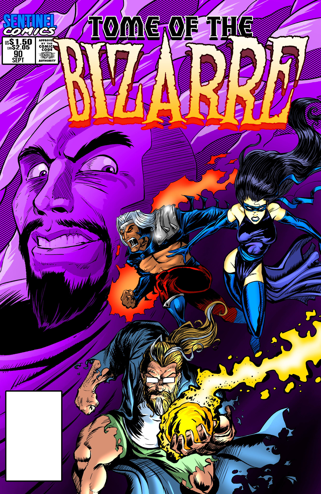

GO
Godai
2023-07-25 20:38 UTC
#1
Looks like it’s Assistant Poster’s Month here at Sentinel Comics, so apologies for the late topic post. But don’t let that delay you from diving right in to this week’s terrific team-up!
Letters Page #256
And looks like I need to figure out the code to do the fancy “Here’s the cover and blurb!” thing they normally do.
CR
Chief_Lackey_Rich
2023-07-25 21:54 UTC
#2
Pretty sure you can just cut and paste from the page itself. Let’s see…
"The nicest fellow and the edgiest twins, but as 90s as all get out!
We come in with no concrete ideas… and yet hit the ground running on a three part story sure to shock and amaze! Heroes! Cults! Thrills and spills! We’ve got 'em all, and more!
We also read letters, answer questions, and leave frustrating crumbs about future content in unplanned ways, as per usual!
Join us next week: Tuesday, August 1st: Episode #257 - Writers’ Room: Parse in space! And then… GEN CON!!"

That seems to work.
Someone really needs to tell Scholar to go shop for some new clothing already. I’m all for comfortable old clothes but he’s carrying it way too far. Guy’s probably wearing worn-out flip-flops with holed socks too…
I believe the usual way it’s done is by simply pasting the bare URL and uploading the image, like this:
Bare code:
https://theletterspage.libsyn.com/episode-256-writers-room-tome-of-the-bizarre-vol-3-90

TA
TakeWalker
2023-07-25 22:21 UTC
#4
I just adore the guy’s expression on the cover.  “Count Beardo LIIIKE!”
“Count Beardo LIIIKE!”
I don’t think I would accept rent from spiders. <_<
I know so few people who actually have arthropod fursonas, I actually don’t know if there’s a name for them.  Like, “chitey” sounds like a damn slur. I’d just call them “buggies” myself…
Like, “chitey” sounds like a damn slur. I’d just call them “buggies” myself…
I’m with Adam, Christopher got caught in the death cave this year. c_c No way was that one entire year ago!
Also, I only just barely remember Lion Man as it is, c’mon. c_c
Love how the pieces of this story just fall into place, that is really fun to watch.
Crystal Cult DS&PS variants when?
“We didn’t say they were good at things.” I was really looking forward to this episode because the more we learn about DS&PS, the more I like them.
Ooh, a hero fight even!
I kinda like Colombo Scholar though. 
I feel like I get why someone would say the Scholar is like Sans, but I don’t think it’s true. <_< Also, this letter is absolutely nuts.
If you haven’t heard “Jessica”, change that, it’s really good.
A thousand points for “bad space choices”.
Captain Eduardo Blackboard variant for La Capitan when. I am so glad we could get this deep pre-Sentinels lore! Someone be sure to ask them for more at Gen Con! It sounds like it’s gonna be a trip regardless. XD
DP
dprcooke
2023-07-26 15:46 UTC
#5
Where is Powerhound?
Is he safe?
Is he alright?
MI
MindWanderer
2023-07-26 18:41 UTC
#6
One of those rare cases I wish I was on TLP Discord so I could post a lengthy comparison of Sans and The Scholar that Christopher and Adam would see.
I hadn’t thought about it, but I see it. They’re both portly, wise, and easygoing. They’ll let people make their own decisions so they can learn from their mistakes. They’ll let people be sort of evil if that’s their thing, but if they’re too evil, it’s time for a smackdown. Sans certainly lets this get farther than Scholar before intervening, though; Scholar is actively a hero while Sans is not.
ES
Escher
2023-07-26 22:18 UTC
#7
Hang on, did they just imply that all the extra Las Paradojas Magnificas get scuttled and dumped into the Evil Guise Black Hole?? That can’t possibly go badly!
FA
Faralis
2023-07-27 05:05 UTC (in reply to #6)
#8
I still don’t know about this. There’s some obvious parallels in their attire, and they both know more than they let on at first glance, plus they are really supportive - sometimes at their own expense.
However, Sans is like 90% immature jokes, too. He literally gets introduced trolling the player character with a fart cushion. And he shuns responsibility, at least that’s how he acts (come on, he doesn’t even manage to feed his pet rock regularly!). Scholar to me presents as laid-back and relaxed whereas Sans comes across as downright nihilistic.
SE
Sea-Envy
2023-07-27 10:00 UTC
#9
I have been wondering about Edwardo Blackboard and his educationeers since they first mentioned him.
Nebraska Educational Televison (NETV) produced at University of Nebraska Omaha (UNO) had a show called I-Land Tresure where a pirate and a schoolmarm genie follow a treasure map by solving puzzles based around simple English lesson and logic.
TR
Trajector
2023-07-28 19:14 UTC
#11
Hold the phone – there was a Werewolf Haka era?!
GO
Godai
2023-07-28 20:42 UTC (in reply to #11)
#12
If I remember correctly, it lasted about a year of publishing time.
TR
Trajector
2023-07-28 21:29 UTC (in reply to #12)
#13
Wow, I forgot that we had any information about that.
RA
Rabit
2023-07-29 15:29 UTC (in reply to #11)
#14
Found the reference: “In what issue did the Werewolf Haka story begin, and in what issue did it end? It was a year-long story, beginning in Tome of the Bizarre vol. 3 #91 (October 1995, coinciding and crossing over with Prime Wardens vol. 1 #118) and getting resolved in PW #130 (October ’96).” - Sentinels Wiki on The Letters Page: Editor’s Note 64
P2
Powerhound_2000
2023-07-30 20:41 UTC (in reply to #5)
#15
I’m fine. Just was on vacation so couldn’t as easily post.
LO
LonelyMan
2026-02-02 14:45 UTC
#16
Spiders are often covered with fur, so “furries” isn’t inaccurate.
I want a pear where half of the pear is another entire pear. That sounds delicious.
I think this is the first confirmation that DS and PS premiered separately.
They just said Halcyon might make a bargain with one of the demon princes, and I instantly thought it should be Lucithar. The beautiful demon of pride who did or does rule a media company which later ends up inherited by busybody…he seems perfect for this. Apparently they went the other way and used P’s nemesis instead of D’s.
It seems inevitable how they begin with a single issue and it grows into their usual arc of 3.
I didn’t expect to suddenly love Golden Age Scholar as a romantically oblivious everyman detective, who’s sort of bad at his job and only succeeds because of vaguely defined mystical abilities, but it actually weirdly fits. It’s apropos for him to be reinvented into Alchemist Dude at around the same time as actual Dude and Fullmetal Alchemist. I really find myself liking the concept.
It stands to reason that the “temporal detox” process is mostly specific to La Capitan, because she was the one with a Paradoja Magnifica that sailed into a temporal maelstrom, causing the ship to be intimately connected both to the Seas of Time and to herself. Most of the Capitans that Commodora and Chrono-Ranger deal with are from before her crew was recruited; once she transitions from VOTM Capitan to single villain with crew, she’s probably pretty temporally stable and doesn’t generate a lot of alternates anymore.
I am distinctly disappointed with one small aspect of this cover. I mostly like it, but we were promised crystally things, and we only technically got them, the background only sort of looks crystalline with no protruding distinct crystal shapes like I would have liked. And because Halcyon had a purple face on a purple background of technical crystal, we can’t tell if that’s actually his skin color or if it’s just ambient lighting or something. Would definitely have that corner of the art to change a bit. But the bulk of it looks phenomenal, especially a grungy early 90s Scholar doing an action pose in his bathrobe. Loved that part so much, couldn’t be improved on.
The outro computer nostalgia is one of my favorite stingers they’ve ever done. I miss 256-color Windows systems, they were delightfully effective with how well they used the little they had.